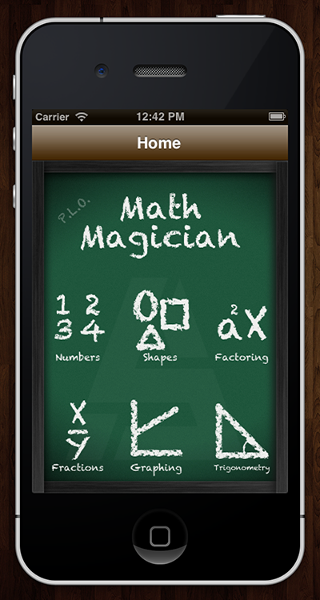
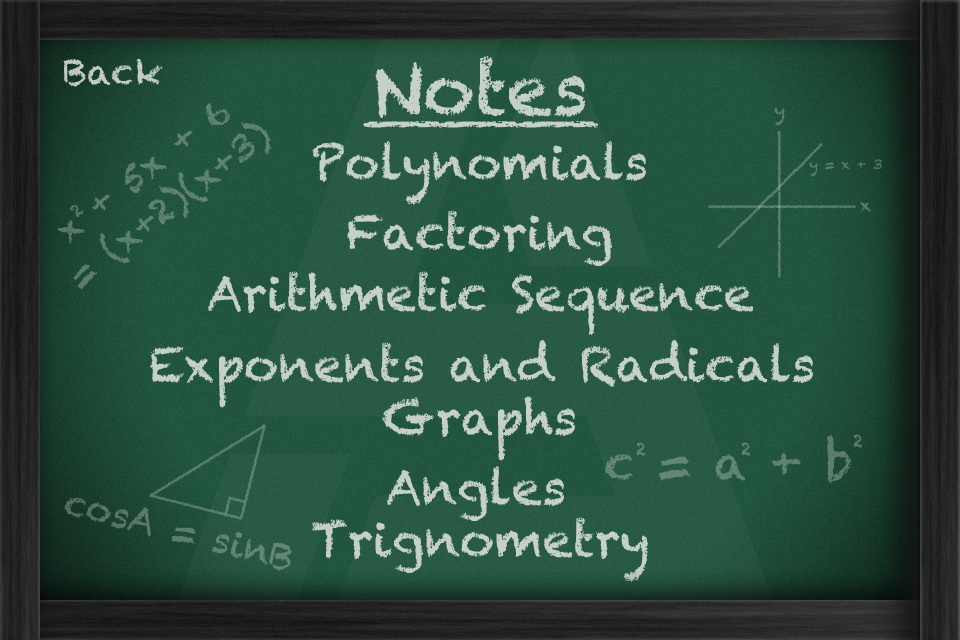

Math Magician was my Grade 10 Computer Science independent project. I had been interested in mobile app development for a while, and I had just purchased a Mac, so I figured it was time to test out Xcode.
I wanted an app that could do my math homework for me, and I figured that the calculations would not be too difficult for the level of math that we were learning in high school. I looked up the BC math curriculum for grades 10-12, and looked over my past notes for grades 7-9. After sorting the topics into categories, I eliminated some topics that would take too long to implement, as I only had a few months to finish it.
I felt rather confident about working with GUIs after working with Visual Basic for HyperHalo. After all, if writing a program that had multiple windows was so basic, it should be easy for something with just one window, right? Apps were written in Objective-C, a variant of C, so it should be easier to learn that coming from C++ than BASIC, right?
Nope. I hadn’t yet been introduced to the concept of object oriented programming, and I was about to learn how difficult making an app without understanding the concept of classes would turn out to be. Here is a screenshot from one of the views of the finished app:

As you can see, I never figured out how to use UINavigationController, and I wound up having to manually configure a back button on every single one of my views. This process added an unnecessary amount of additional work to achieve such a simple goal.
Another trouble I ran into was the issue of input. By default, the letter keyboard would pop up when the user pressed a text box and would not disappear. I had to figure out event handling on buttons I did not create (call [sender resignFirstResponder] for the event at which the button is pressed), and how to set the keyboard property in the xib file. Back then, the keyboard choices were limited and a custom keyboard had to be created in order to support decimals in the number pad, so I went with the numbers and punctuation option to support decimals. I also had to sanitize my inputs on every button press from the user.
Thankfully, iOS automatically took care of input sanitization for me, but I would have to learn how to do this manually when I later tried to recreate the app for Windows Phone 7.
I was also surprised to see that C++ and Objective-C were almost completely different (mostly because I only used C++ to print text). I was unprepared for the amount of square brackets that I would have to write and the amount of methods I would have to call in order to fulfil my simple desires.
Lastly, I found Xcode and its Interface Builder less intuitive than Visual Basic. Perhaps it was because it was the first time I was using a Mac, or that most of the tutorials I looked through were for previous versions of iOS and Xcode, but I found it more difficult to figure out how to achieve the results I wanted as conveniently as I had the previous year.
Despite these issues, I eventually wound up with a reasonably functional app:
Skeuomorphism wasn’t considered a sin in 2011, I swear!
Submenu: contained buttons that led to each topic
The assignment that completes assignments
Outside of my struggle with Xcode, I enjoyed figuring out what I would display to the user, sketching how the interface would be laid out, deciding what content would be included in the app, and calculating the algebraic formula for each box before turning them into formulas in C.
Although it’s not the most advanced app in the world, I was proud of what I’d accomplished in my Hello World app. I never wound up publishing it, mostly because of the $100 annual developer fee, but it was incredibly gratifying to see my own creation running on the little device that was glued to my body.
On another note, I also had plans to make the iPhone app into a universal app:
The additional feature I was planning to add to the iPad version was the Notes section, which would show different formulas and diagrams as a reference. I thought the bigger screen of the iPad would be ideal for showing a lot of information, as a textbook.
I also had a Windows Phone 7 app in progress, with the big new feature being that it would show how to solve the questions step by step. The biggest flaw here was that I did not know about the concept of modules, so making a view for each step took a very long time. I may revisit this project later on, although the project no longer seems relevant with how well WolframAlpha works for the same purpose.